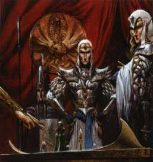
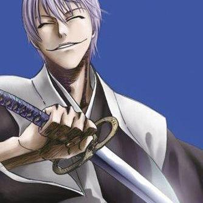
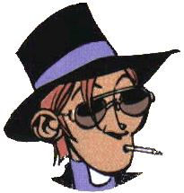
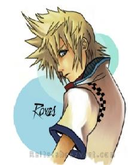

Forums galactiques > Assemblée Galactique : diplomatie officielle > Passage obligé : Présentations
Pages : 1 2 ... 24 25 26 ... 40 41
| Roots Boy Respect diplomatique : 923 28/02 ETU 16:10 | Score : 6 Détails "Quel était cet inconnue?? Pour qui se prenait il??" Soudain l'esprit du vieux Roots Boy devint plus clair et beaucoup de souvenirs ressurgirent...Un petit sourire apparut bientôt sur le visage ridé du ganjasmoka. Mais oui bien sur !! Chacomatt !!
"C'est un plaisir de vous revoir parmis nous !! L'expérience des anciens ne peut faire que du bien à cette galaxie troublée. Je me rappelle de vous, nous avions organisé avec les Orphelins le premier attenta qui visait Jafnhar Le Despote. Quel fabuleux combat, je me rappelle qu'elle plaisir m'envahit qu'en je su que vous étiez de notre coté, votre nom était synonime de puissance... Quoi qu'il en soit, si vous souhaitez que je vous aide pour vous remettre, vous n'avez qu'à me contacter, ce sera avec plaisir que je vous répondrai." Roots Boy se rassit tout content, revoir les anciens lui faissait tellement plaisir... | ||
| Balhok Respect diplomatique : 15 28/02 ETU 19:57  | Score : 5 Détails Un vieux support holo entra dans la salle par le passage de service, celle par laquelle beaucoup de représentants holos disparaissaient en meme temps que leur propriétaires. Une fois en place l'image de Balhok se materialisa, légèrement dédoublée, avec quelques sautes d'image.
"Bonsoir mesdames et messieurs, excusez-moi pour la qualité de ma représentation, il semblerai que l'on m'ait cru mort..." Apres avoir rapidement scruté la salle il continua : " Je doute que quelqu'un me reconnaisse mais j'ai deja siégé, mais peu parlé, dans cette assemblée avant l'orage magnétique. Je me nomme Balhok, chef des Nirgali. Après des mois n'anarchie nous avons enfin pu reprendre le controle des infrastructures. j'ai été élu à la majorité pour etre le guide permanent des Nirgali. Les quelques années de guerre civile ont convaincu mon peuple que l'on est jamais assez tranquille, aussi mon but est simplement de faire en sorte que demain soit semblable à aujourd'hui, sinon meilleur. Je suis donc ici pour me presenter à vous et pour affirmer mes intentions : - Je n'attaquerai personne sans que l'on m'ai offencé moi ou mes alliés - Bien que les capacités de ma flotte soient actuellement très limités, tout comme ma flotte d'ailleurs, je serai pret prochainement près à proposer ou accepter toute offres interessante de commerce, de marchandises comme d'informations. Sur ce, bonsoir !" | ||
| manbikwara Respect diplomatique : 91 28/02 ETU 21:55 | Score : 2 Détails Cette guerre durait… trop?
Il semble que dés l’instant que la guerre s’institutionnalise, que le rêve d’un enfant Tupi-kawahib se mue au fil des générations et des siècles d’un pompier, médecin ou autre bienfaiteur de l’humanité en un guerrier exterminateur de M’Bala,… Il semble que quand la notion, le souvenir, l’idée même de paix devient insaisissable; que son évocation provoque chez son interlocuteur la gêne de l’ignorant voulant garder fierté; que ce mot se noie dans l’inconnu pour en devenir un et pour finalement disparaître des encyclopédies…. Il semble que quand les grands-pères deviennent interchangeables, même rêves, même désespoirs, même histoires héroïques, même haine envers l’autre…. Alors ce trop n’a plus de sens, la guerre c’était les M’Bala, la guerre c’était les Tupi-kawahib Dire que la guerre durait trop signifiaient que les M’Bala et les Tupi-kawahib vivaient depuis trop longtemps. D’ailleurs la guerre était, tout simplement! | ||
| manbikwara Respect diplomatique : 91 28/02 ETU 21:56 | Score : 3 Détails Régulièrement des sommets entre les gouverneurs de ces peuplades se produisaient. Initialement appelé sommet pour la paix, puis sommet de la réconciliation ou encore plus récemment sommet de la guerre.
Le terme guerre agonisant depuis la mort de la paix, aujourd’hui ce sommet s’appelle le sommet de la plus grosse. Cela fait des millénaire que d’aucuns n’attende plus rien de cette rencontre, alors aujourd’hui les gouverneurs essaient de s’impressionner en montrant comment ils vont s’anéantir. D’ailleurs aujourd’hui s’en déroule un. Pitu des Tupi-kawahib : « Alors mécréant que dis-tu de ma nouvelle lance chromé avec des ailerons… Non seulement elle est carrément stylée mais elle va en empaler par paires des nabots de ta race » M’Ba des M’Bala sourire béa aux lèvres : …. Pitu : « Hé ben elle bronche pas la fiote! Elle a trop les chocottes hein! Hé, et tu n’as même pas vu mon bouclier loupe… en plus de me protéger de vos flèches minables mes guerriers vous rôtiront grâce à la dernière découverte de mes scientifiques… la lumière brûle mon gars…. Hé hé hé ça t’embouche un coin! » M’Ba : « M’en fout j’ai été contacté par un dieu qui possède 3 planètes, alors gaffe à ta gueule parce que moi j’ai déjà commencer à prier pour lui » Pitu : « Arrgh à ce que je vois tu es toujours aussi mécréant, il n’y a qu’un dieu et d’abord il n’y a qu’une planète au centre de l’univers pauvre inculte… même nos incroyants le savent » | ||
| manbikwara Respect diplomatique : 91 28/02 ETU 21:56 | Score : 1 Détails Et là d’une voix d’outre tombe Manbikwara dit : « Non j’ai 4 planètes, en faisant le tour de la votre j’ai décidé de la prendre ».
M’Ba : « ha mon dieu, je sacrifierais 50 vierges pour vous.. » Pitu : « Le tour de la planète???? » Manbikwara : « Huummm, non dépose les moi devant ton palais, je me chargerais moi-même du sacrifice » M’Ba : « Vos désirs sont mes ordres Dieu » Pitu : …. Manbikwara à Pitu : « Oui, je sais ça fais toujours ça la première fois » Et Manbikwara, ce vénérable dieu s’envola dans le ciel à bord de son oiseau fait de métal et de feu. Pitu à M’Ba : « Le tour de la planète??? Elle n’est pas plate notre planéte? » M’Ba : « Bah je croyais aussi, et il m’a même dit qu’elle tournait!!! » Pitu : « hé ho!!! C’est pas parce que tu avais raison pour le dieu qu’il faut me prendre pour une cruche! » De retour dans son vaisseau sur le pont de son vaisseau amiral de la plus terrible flotte que n’ai connu l’univers. Manbikwara : « HA HA HA HA HA, quelle bande de primitif… Ils me prennent vraiment pour un Dieu…. HA HA HA HA HA HA, et quand ils ont su que j’avais 3 planètes, vous auriez du voir leurs têtes…. HA HA HA HA HA HA HA, enfin c’est pas eux que notre flotte de 110 frégates d’invasion peut craindre…. D’ailleurs qui dans notre galaxie peut nous menacer ??? » Le général en chef et son charger de com’ : …… Manbikwara : « Hé bien vous en faite une tête, ils sont pas drôle les primitifs? » Le général en chef : « Ben pendant votre absence, il s’est déroulé un événement étrange… Notre scanneur s’est… comment dire affolé » Le chargé de com’ : « Oui il indiquait une masse très importante en mouvement » Manbikwara : « Importante comment? » Le général en chef : « Euh comme 1 000 000 notre flotte » Manbikwara : « HA HA HA HA et c’est pour ça que vous faites cette tête? Nous avons 110 frégates et 4 planètes vous entendez 4 planètes…. Soyez logique et raisonnable…. Il ne s’agit que d’une erreur matérielle…. Voyons tout autre explication s’avérerait être une hérésie! » Manbikwara enchaîna : « d’ailleurs avez-vous essayé de les contacter » Le chargé de com’ : « Oui seigneur » Manbikwara : « et…? » Le général devançant d’un cheveux son chargé de com’ : « Rien…. Absolument rien! » Manbikwara : « Allons mes chers, laissez tomber vos inquiétudes hérétiques et venez vous amuser » Sur ce Manbikwara alla chercher ces 50 vierges. Le chargé de com’ au Général : « Mais mon général! » Le général : « Oui je sais mais tu l’as entendu… hérésie il a dit… alors moi le bûcher je préfère éviter donc tu efface tout des disques mémoires » Le chargé de com’ : « Tout ? Quand ils nous ont répondu qu’ils avaient déjà donné au mendiant d’à coté lors de notre premier contact » Le général : « Oui » Le chargé de com’ « Hé aussi les rires après que vous avez demandé le respect parce que nous avions 4 planètes ? » Le général : « Surtout ça » | ||
| Sandor Darhan Respect diplomatique : 1019 28/02 ETU 21:58 | Score : -2 Détails wAou mais c'est vrai qu'ils recrutent un max les petits commandants les insurges...!!!
| ||
| Marcélus Walace Respect diplomatique : 19 01/03 ETU 10:12 | Score : 13 Détails Au sein de l'Empire naissant, dans la salle autrefois dediée aux communications:
Walace:alors mon brave? Y a t il encors quelques choses qui fonctionne dans ce damné palais en ruine? Ce foutu ouragan aura vraiment tout ravagé!! L'opérateur:Nous éssayons avec inssistance depuis votre nouvelle prise de pouvoir mon Empereur mais pour le moment rien n'indique que d'autre entités aient pu survivre à la catastrophe galactique. Quand soudain le son éléctrique du transmetteur se fait entendre.... L'opérateur:Les batteries sont faibles, Empereur, mais le signal est perceptible... Walace:Et qu'est ce donc!!!??? L'opérateur:Voila le message: « PROVENANCE : Capitale galactique, système 0. EMETTEUR : Gouvernement galactique. OBJET : Réponse à votre demande de recensement. CONTENU : Commandant, nous avons reçu votre demande de recensement. Vous n'êtes plus seul. Les communications galactiques viennent d'être rétablies par nos soins dans votre secteur galactique. Nous avons des raisons de penser que d'autres commandants ont pris le contrôle d'autres planètes dans votre système lui-même. Nous vous envoyons immédiatement les coordonnées de l'Assemblée galactique. Si vous ne possédez pas la technologie d'hyperfusion permettant de vous déplacer physiquement, vous pourrez cependant consulter les débats, et envoyer des messages holographiques. Nous vous encourageons vivement à sortir au plus vite de l'autarcie dans laquelle vous êtes pour vous renseigner sur la situation galactique actuelle. Fin du communiqué.» Walace:Ben mes aïeux, Enfin!!!!! Une lueur d'éspoir faisait enfin son apparition au sein de ce petit Empire émergeant! Walace:Envoyez de suite le message suivant: Commandants du peuple des exilés, Je me présente à vous en ce jour car nous venons enfin de rétablir les communication avec Ambassade. Notre téchnologie actuelle ne nous permet pas de nous déplacer en dehors de notre système, mais dès que cela sera envisageable, nous nous efforcerons de mettre en place une permanance sur Ambassade le plus rapidement possible! Nous venons de vaincre le chaos qui régnait chez nous, et nous ésperons trouver la quiétude hors de nos frontières. Nous demandons à tous commandants bienveillant de bien vouloir nous fournir des renseinement quand à la politique actuelle de la Galaxie. Dans l'attente d'une réponse que nous ésperons des plus compléte, veuillez recevoir les sincères salutations de l'Empire! Cordialement Mr Walace. Walace:Voila, plus qu'à attendre maintenant, encors et toujours.... Soldat, ne quittez votre poste sous aucuns prétexte, je veux être mis au courant dès que reception, si il y a, d'une nouvelle réponse!!! L'operateur:Sir yes sir! | ||
| Thyrion Respect diplomatique : 30  01/03 ETU 19:12 | Score : 8 Détails \...Grésillement d'holo...\
Operateur : La connexion est établie monsieur. Thyrion : Je me présente à vous en ce jour pour vous informer du rétablissement des communications vers la planète Odin il y a peu. Hélas je ne peux actuellement me déplacer pour vous rencontrer de visu. Avant l'Ouragan Magnétique je participais activement au commerce interplanétaire. Mes ambitions actuelles sont d'apporter un équilibre a cette galaxie en laquelle je porte de nombreux espoirs. Salutations à tous. \...Fin de transmission...\ | ||
| Mansfeld Respect diplomatique : 4380 01/03 ETU 23:10 | Score : -1 Détails "C'est bien parti..."
SMEUG | ||
| nemusar Respect diplomatique : 303 01/03 ETU 23:57 | Score : 1 Détails
avis au jeunes commandants, l'empire nemusarien actuellement en stase fait des dons merci de venir dans la salle au marché pour y connaitre les finalités. | ||
| Lyle Emagan Respect diplomatique : 15  02/03 ETU 14:44 | Score : 15 Détails * Au centre de l'assemblée quelques grésillements se firent entendre, puis peu à peu un hologramme se forma laissant apparaitre un jeune commandant d'une dix-huitaines d'années assis derriere son bureau au milieu d'un chantier et d'un bruit monstre *
- Amis de l'assemblée galactique bonjour! Je me présente... Lyle Emagan... Représentant de l'empire Emagien de cette galaxie... En effet, comme vous avez pu le deviner en voyant tout ce chantier... Nous venons d'arriver... De très loin... * On pu voir derrière Lyle un gigantesque vaisseau en train de se désassembler pour former les bases d'une nouvelle cité, et juste devant ce vaisseau on pouvait aussi voir un laboratoire de clonage, d'où, toutes les minutes sortaient une centaines de personnes différentes * - Si nous sommes venus dans cette galaxie, c'est dans un but de paix et de fraternité, afin de connaitre nos voisin dans la paix et la bonne humeur * Un homme blond avec une tenue de militaire ensanglantée et tirant deux cadavres d'indigènes interpella Lyle en lui criant "C'est bon, on a éliminé les derniers villages autochntones avoisinant... Ils baignent dans leur sang, ils ne nous dérangeront plus!". Lyle géné répondit très fort devant les holotransmeteurs "Les malades? Ah oui, traine les à l'infirmerie..." Lyle se retourna vers les holotransmeteurs... "Oui... On a quelques malades... Comme vous voyez ils ne vont pas très bien..." On put voir alors le blond regarder Lyle indécis puis jeter les cadavres dans une fosse commune... * - Donc... je disais, si nous sommes venus ici, après un long voyage de 9 mois depuis Esperance... C'était pour découvrir cette belle galaxie des Exilés dont nous avions tant entendus parlés! Nous avions si hate de vous rencontrer... * Deux batisseurs passèrent derrière Lyle parlant si fort qu'ils couvrirent les paroles de ce dernier... "Hé tu as entendu? ils ont changé le nom de cette galaxie... Maintenant elle s'apelle la galaxie des Exilés... Encore un de ces noms de tarés..." Le deuxième homme répondit "Mais non c'est pas ça! ils se sont trompés dans la programation au lancement du vaisseau de colonisation... résultat ils nous ont envoyés dans la mauvaise galaxie... Ces Astronautes... Tous des incapables..." * - ... Nous espérons donc pouvoir nous integrer parmis vous et partager nos connaissances... Notre empire possède de nombreuses technologies qui probablements vous fascineront... * Une grande femme blonde; le bras droit de Lyle arriva en courant * - Herr Emagan! Herr Emagan!! Nos espions viennent de nous rapporter leurs rapports sur toutes les technologies qu'ils ont put voler dans la galaxie... Wunderbach! * Un homme du chantier cria au loin "UN FUSIBLE A PETER!" on put entendre une petite détonation et le holoprojecteur de l'assemblée se coupa * | ||
| Soda Respect diplomatique : 706  10/03 ETU 00:48 | Score : 8 Détails L'endroit paraissait dans une bulle, un lieu où le temps s'était arrêté, calme et harmonieux, loin des affres des guerres inter-galactiques. L'homme qui s'avança à travers l'allée pavée avait une démarche élancée. En costard noir, chemise blanche et col serré, son costume de prêtre sobre contrastait avec ses yeux bleus rieurs et son inamovible sourire en coin. Il rejoignit la porte vitrée de la vieille bâtisse, la poussa et pénétra dans le hall. Un serviteur lui fit signe de monter, ce qu'il fit tout en adressant un clin d'oeil à une jolie petit servante.
Un deuxième majordome lui montra une grande double porte en bois avant de s'eclipser. Soda poussa les battants et vint s'assoeir prêt du lit où reposait un homme au début de sa vieillesse. Une grandeur d'âme et un profond s'émanait de l'homme, même couché dans son lit, mourant. Soda inspira et le réveilla. "Je suis là. -aahaa. Enfin te voilà. -Comment te portes tu? -Dans l'antichambre de la mort. Cette nuit je craint que je vais m'éteindre. -Toujours résigné à ne pas croire en l'Eternel afin d'espèrer continuer de vivre dans l'au-déla? Même la peur de la mort ne te pousse pas à croire? -Aha! Ma vie fut passée à défendre une philosophie athée. Et je n'ai pas peur de la mort, j'ai fait mon temps, c'est ainsi. Et ne joue pas le prêtre avec moi, foutu séïde du diable. -Comme si cela t'embête. J'ai vendu mon âme, par profit, je l'admet, mais surtout par déception. Je défend moi aussi des valeurs et des idées. - Et ce sont les valeurs que j'ai défendues durant le temps que j'ai passé dans la Galaxie des Exilés, il y a bien longtemps. Je me sens mourir, et le grand regret de ma vie fut d'avoir dû quitter trop tôt la capitale et abandonner des amis qui menaient le même combat que moi. -Pourquoi est tu parti? -Des soucis, des problèmes qui demandaient des solutions, de solutions qui n'avaient pas les bons problèmes. Bref, je désire que tu reprennes mon flambeau, rejoint la Galaxie des Exilés et fait toi un nom. -Tes anciennnes connaissances y sont toujours. -Je n'en ai aucune idée. Certains sont peux être morts. Certains sont peux être partis, tout comme moi. Je me souviens de quelque uns. Mansfeld, Roots Boy, Requiem, Dedee, les Bisounours, Lizaka et bien d'autre encore, comme Sandalphon. -Lequels se battaient à tes côtés? -Mansfeld, roots boy, requiem. Sandalphon m'avait appris les intrigues politiques de la Galaxie. Il m'avait éduqué. -Qu'aurais je à y gagner. -Ce que tu recherches depuis toujours, du pouvoir, de la puissance, la gloire et le respect. -Je suis perplexe, mais vois tu par simple curiosité, je pense que j'irais. La capitale est intéressante? -Une belle ville, il faut l'avouer. La nuit il fait bon d'y vivre. -Ca me suffit, monsieur mon mentor! J'irais. Par respect pour toi, par respect pour tes rêves, par respect pour notre chère galaxie. Je reste là ce soir, je veux être là quand viendra l'heure. Ait la bonté de m'appeller. Ca compte pour moi d'être là. -Soit rassuré, je te ferais mander. Va t'installer pour l'instant. -Bonne nuit, Edmond. -Bonne nuit, Soda." Il se leva et quitta la pièce silencieusement. Le vieil homme était déjà endormi. Dans l'obscurité naissante dûe à le tombée de la nuit, la mine enjouée de Soda disparut et le prêtre fou, comme l'appelait ses amis, pleura. Son mentor avait toujours mené sa vie comme il l'entendait. Il avait décidé de mourir cette nuit, il mourra donc cette nuit, à n'en pas douter. Soda décida qu'il irait à son enterrement et poserait une rose blanche, celle qui aimait tant. Demain serait un jour noir, demain le prêtre fou rejoindra la Capitale de la Galaxie des Exilés. | ||
| Alice Respect diplomatique : 14 10/03 ETU 01:35 | Score : 14 Détails Que de malheurs pour la petite Alice. Ses débuts en tant que commandante avaient tourné au désastre intégral.
Loin du pays des merveilles qu'elle aurait pu s'imaginer, elle avait été la proie d'un lapin blanc très pressé d'évoluer... Attaquée, privée de sa planète natale, elle avait réussi à récupérer son bien et était enfin prête à démarrer sérieusement les affaires. Car, il faut bien le dire, elle aimait fortement l'argent, les leems, la thune, le flooz, les pépettes quoi ! Tout ce qui comporte le symbole £ et qui pouvait servir à se payer ce qu'elle voulait. Oui, Alice était guildéenne. Salut les gars ! Comment baigne ? La petite peste la plus attachante de cette galaxie est arrivée ! Alice, sois un peu plus polie ! Tu es à l'assemblée ! Bon, je vous présente Adelbert, mon Ange gardien. Gentil, pratique pour me sortir des situations de m****, mais un peu saoulant sur les bords... Adel, dis bonjour à la populace, tu vas voir, c'est très rigolo ! Un espèce de bulle de gaz informe apparait derrière Alice. Elle traverse la jeune fille, se place juste devant elle puis prends la forme d'un visage. Celui d'un jeune homme d'une vingtaine d'années, avec une force dans le regard, presque hypnotique. Messieurs dames, permettez moi de me présenter, Adelbert, ange du troisième palier, responsable d'Alice dans le but de la remettre dans le droit chemin. Me rammener dans le droit chemin ? T'as fumé ou quoi ? Non, justement, c'est toi qui a fumé... Ton dernier cône remonte à trois heures. Je te rappelle que tu es destinée à monter rejoindre ton père au dixième palier, car c'est un des anges les plus hauts placés. Alors évite les bêtises inutiles... Oh, il pourra bien attendre un peu, le paternel ! Je suis ici pour m'amuser avec la bande de guguss ! Bonjour les gens ! C'est moi qui parle dans le micro ! Excusez Alice, elle est actuelle sous l'effet de stupéfiants, les effets devraient disparaitre d'ici peu. Voyez moi un peu comme son "contrôleur judiciaire". Et comme l'homme qui l'aime le plus au monde. Je te rassure, c'est pas réciproque... Bon, revenons à nos moutons. Bon, à part mon compte en banque, peu de choses m'interessent, mais je pense sincèrement qu'on va tous bien s'entendre. On a toujours besoin d'une plus peste que soi ! Psssst, toi, là, au premier rang, t'as pas du feu par hasard ? | ||
| Beth le cerf blanc Respect diplomatique : 112  10/03 ETU 10:33 | Score : 0 Détails Beth passait a l'assemblée ce jour la,il eu l'idee d'aller regarder les nouveaux commandants,c'était samedi,l'assemblée était ouverte.Il vit donc le speetch d'Alice.
"Tu veut du feu?" Beth sortit un briquet de sa poche.Et avant de le lui envoyer,dit. "J'encourage pas la drogue..." Voyant les yeux d'Alice rouge et sur le point d'exploser il se dit qu'il valait mieux envoyer le briquet.D'un geste rapide de la main,il l'envoya a Alice. "Si tu veut de l'argent ne le depense pas en drogues." "L'astropastis c'est mieux." ^o^ | ||
| Larry Winthorpe Respect diplomatique : 2277 10/03 ETU 10:38 | Score : 5 Détails Larry se leva, un peu intimidée par le fait que la jeune fille droguée s'adresse à lui (ou pas ?), puis s'avança jusqu'à elle pour lui tendre un briquet.
C'était un très joli briquet en or, gravé des initiales L.J.W., que le frère de sa maman, Oscar Winthorpe, lui avait offert lorsqu'il avait eu 18 ans. Mais Larry ne s'en était jamais servi, en bon non-fumeur, sauf une fois, en camping avec sa mère, pour allumer un feu parce que le Butagaz était tombé en panne. Bref, Larry tendit le feu à la jeune fille. Mais un jeune garçon plus sûr de lui fut plus rapide, et tendait déjà un briquet à Alice. Larry resta le bras tendu, le briquet à la main, et ne bougea qu'au bout de 5 bonnes minutes, après avoir réalisé à quel point il avait l'air stupide. "Ah, heu... désolé monsieur Beth... heu... bref. Bienvenue aux jeunes commandants en cette galaxie des Exilés. Je rappelle que la Winthorpe S.A. propose aux nouveaux arrivants des aides financières ou militaires (12 commandants ont déjà bénéficié de notre aide) dès l'ouverture de leurs systèmes, et se tient également à leur disposition en cas de questions diverses concernant la bonne marche de la galaxie. Encore une fois, bienvenue à tous !" | ||
| Beth le cerf blanc Respect diplomatique : 112 10/03 ETU 10:45 | Score : 2 Détails "Désolé commandant Wynthorpe,si vous voulez je peut laisser votre briquet a la dame?"
Beth rangea son briquet,et s'éloigna du parloir,il alla se rassoir de la ou il était venu,laissant le commandant devant la pupitre avec un briquet a la main. "Larry Larry Larry!Fonce! | ||
| Iblis Ginjo Respect diplomatique : 786 10/03 ETU 17:47 | Score : 7 Détails Poritrin, planète de mes rêves les plus fous ... J'écrase ma clope, je remonte mon col pour lutter contre la frâicheur du vent ... Je pense donc je suis ...
"L'homme est un prédateur. Moi aussi, je suis un homme et un prédateur. Mais je pique pas les gonzesses des autres, sauf si elles le demandent gentiment, je ne prends pas non plus les vies ou les espoirs ... Mon rayon ? L'argent, le fric, le flouze, les pépètes, la tune ... Tout ce qui brille, tout ce qui vaut cher, tout ce qui a de la valeur. Je pique ton pognon, bonhomme mais honnêtement en échange de quelque chose. Tu veux quoi ? Des ressources, des vaisseaux ? La gloire ? Là, rêve pas, je peux rien faire. C'est un truc trop intime, la Gloire. Tu peux sourire, j'ai un code d'honneur : je livre à temps et au prix convenu. Toujours. Sans ça, je ferme boutique. Si t'oublies de payer, pas grave, je trouverai un moyen de récupérer mon flouze. Jusqu'au dernier leem. S'il le faut, je prendrai tes fringues. Si t'as pas assez, je prendrai ton âme. Ou pire encore. Alors, tu es encore là donc mon prix t'intéresse. On fait le deal ? Tu voulais acheter quoi au fait ?" | ||
| Thyrion Respect diplomatique : 30 10/03 ETU 18:43 | Score : 2 Détails [Thyrion était présent et sorti de ses pensées pour écouter le discours de cet homme qui lui était inconnu. Il ne le trouva pas inintéressant]
Salutations... je suis heureux de voir quelqu'un de votre trempe. L'ambition et le sens de la réparti qui soufflent en vous me plaisent beaucoup. Bonne continuation à vous. | ||
| Iblis Ginjo Respect diplomatique : 786 10/03 ETU 18:51 | Score : 2 Détails Merci Thyrion. Accueil sympa de ta part.
Nouvelle bouffée de clope Je me fais pas trop encore au job de proprio. Je débute, là. Avant je faisais le tour des tables de jeu. Laisse-moi le temps de déballer mes cartons de fringues et de voir mes nouveaux employés pour leur serrer la pince et je reviens. Nouvelle bouffée de clope A bientôt, bonhomme. | ||
| GOC one Respect diplomatique : 4 10/03 ETU 21:54 | Score : 4 Détails * un homme apparaît (avec interference) via la liaison holographique de l'assemblée *
Cet homme de taille normale est assis sur un tas de ruines , derriere lui une forte activité d'engins mécanique et d'hommes s'affairent à sauver ce qui peut etre sauvé. Commandants,Commandantes,fédéres,commerçants et représentants je me présente je suis le commandant GOC one représentant de la planéte "marponia" je viens en paix . vous m'excuserez de la mauvaise liaison holographique et de l'éventuelle coupure de contact parce que je vous appelle avec un poste de fortune mais ma planète a subit de lourds dégâts et de lourdes pertes (civiles et militaires ).Maintenant je rentre dans une phase de reconstruction pour replacer ma planéte et mon systéme sur la grandes voie de la reussite tout en évitant les erreurs des anciens qui nous ont conduits à la catastrophe mais pour cela il risque d'y avoir quelques frictions.Ne prennez cela pour une agression! mon peuple compte sur moi pour les grandir et moi je peux compter sur lui pour me soutenir!!! *le contact s'interrompit d'une seul coup avant même que le commandant n'est put terminer son allocution* |
Pages : 1 2 ... 24 25 26 ... 40 41
Forums galactiques > Assemblée Galactique : diplomatie officielle > Passage obligé : Présentations